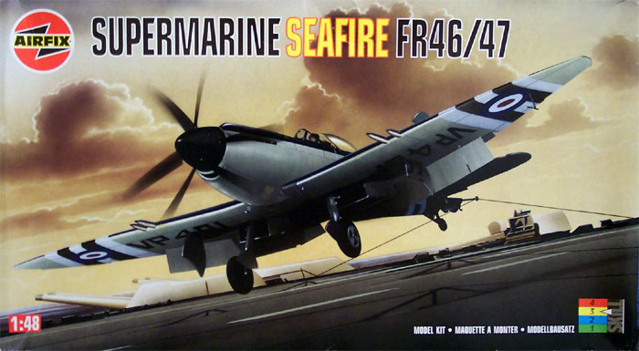
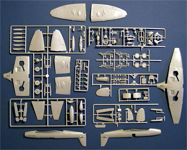
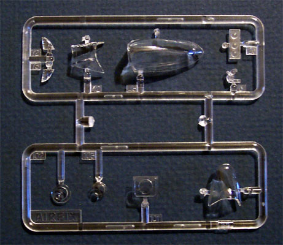
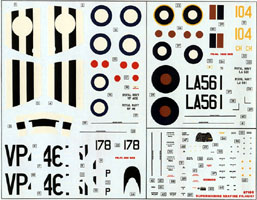

{kind=link}
{kind=link}


Airfix 1/48 FR46/47 kit #07106 MSRP $27.95 USD

Images and text Copyright © 2003 by Matt Swan
Developmental Background
The Seafire, certainly aesthetically the most elegant fighter ever to grace a carrier deck, was the product of adversity; it might be said to have been born of desperation. As a result of a brilliant piece of improvisation, the Navy had been presented with the Sea Hurricane, which had proved that a high-performance shore-based fighter could be operated with relative safety from a carrier, but the Hawker fighter's chances of survival against a Me-109 or Fw-190 were anything but good. Nevertheless, its successful adaptation for the shipboard role had at least brought about something of a revolution in naval thinking, and logically enough. In 1941 the Admiralty began to demand a similar adaptation of what was then the highest performing fighter available - the Spitfire. the Admiralty initiated late in 1941 preliminary trials with a Spitfire VB (AB205). An A-frame arrester hook had been introduced on the centerline aft of the firewall and at the rear of the cockpit to enable shipboard landings.
The task of carrying out the trials was assigned to Lt Cdr H Peter Bramwell. He took his "hooked" Spitfire aboard HMS Illustrious in the Clyde during Christmas week of 1941. Bramwell made twelve successful deck landings, seven take-offs and four catapult-launches before filing his report with the Admiralty, which looked upon it favorably.
The Seafire, as the Sea Spitfire became known, was provisioned with a hydraulically damped and faired A-frame arrester hook released by means of a Bowden cable, and slinging points, with the necessary local strengthening.
Seafire development had lagged behind that of the Spitfire, for the Griffon-engined Spitfire XIIs had entered service with the RAF in 1943 but it was not until after the war, in September 1945, that the first of the FAA’s Griffon-engined Seafires, the Mk. XV, saw service. Shortly thereafter came the F.17 version which was the first to feature the lower profile rear fuselage and “bubble” canopy as well as strengthened undercarriage and better ground/deck clearance.
From 1943 onwards the development of the Spitfire and the Seafire ran in parallel and the next version of the Seafire developed was the F.45, a navalised version of the Spitfire F.21. The two final variants of the Seafire were the Mk 46 and Mk 47, which were navalised versions of the Spitfire Mks 22 and 24. Both of these variants featured counter-rotating propellers and could carry cameras for the reconnaissance role. The Mk 47 also had a chin-mounted air intake, folding wings and short-barreled cannons.
The Seafire had seen more than eight years of first-line service and the number of combat sorties that it flew in that time must surely have approached five figures. No. 800 Squadron had the honor of carrying out the last combat sorties of the Spitfire/Seafire family when in June 1950, the Korean War started. During the Korean Conflict the Seafire carried out 245 air patrols and 115 strike missions against land and sea targets without any losses due to enemy fire.
The final version Mk.47 was powered by a 2,375hp Rolls Royce Griffon 85 engine giving it a maximum speed of 723km/h (452mph) at 6,242m (20,500ft), was armed with four Hispano 20mm cannons and up to eight 27kg rockets or 675kg bombs mounted beneath the fuselage and wings.
Nobody would pretend that the Seafire had been the ideal carrier fighter. It was an airplane, which seemed tailor-made for the pilot and few other aircraft that would have permitted the liberty of the crab-type approach that many pilots used for deck landings. It was a lousy ditcher and a number of fatal accidents resulting from its emulation of the diving characteristics of a submarine, but it had been designed for fighting not ditching.
The Kit

Although produced in 1996 this kit went out of production shortly after that time and can be found at collectors trade shows, E-bay and the serious modeler’s stash and some hobby shops with older inventories. It is a very cool kit molded in a medium gray plastic that demonstrates good quality of material with virtually no flash on any of the parts. The plastic is not brittle and shows no tendency to tear when being removed from the sprue or trimmed with a razor knife. There are 109 injection molded gray parts and 10 clear parts. The parts feature finely engraved panel lines throughout and any injection marks are fine and concealed on interior areas so as to not cause any problems to the modeler.
The primary pieces seem to fit together very nicely. The panel lines line up properly on the fuselage half and the wing to fuselage joint looks to fit very nicely on a test fit. The kit includes options to build it with the wings folded (FR.47)and include nicely detailed interior structured pieces or locked down (FR.46) and with flaps raised or lowered for both versions and front canopies for both aircraft. It also includes the correct air inlet pieces for either version. Fine details that are apparent are items such as hinge details on the gear doors, slinging hooks under the wing and separate oleo pieces on the landing gear. Oddly enough, with all these wonderful details the tires are not flattened. The propeller blades are individual pieces that include alignment studs to keep all the blades with the correct attitude.

There is some detail molded into the cockpit side walls and there is no cockpit flooring rather a few rudder control bars and framing pieces giving it the open bottom look of a Corsair. Unfortunately there is no detail on the upper wing surface to help this look out. Eduard does make a very extensive etched metal set that will help out the cockpit immensely.
The clear parts display good quality of manufacture and casting as well and include the reconnaissance camera lenses, formation marking lights and wing-tip lenses. The main canopy fits in the closed position well but does not fit well in the open position. Squadron does carry a replacement vacuform canopy for this kit and it looks like a necessary addition.
The instruction booklet is very nicely done and consists of sixteen pages of glossy paper stapled in the center to form a true booklet. It includes a brief history of the Seafire in five different languages, an icon key and a lot of very nice exploded images to aid in construction. Options for the FR.46 and FR.47 are clearly indicated and Humbrol paint numbers are called out throughout the booklet. There are no color codes offered for any other paints or any Federal Standard numbers. There are five full pages of decal and stencil placement instructions that also include the exterior painting directions.

The decal sheet provides extensive stencils and a decal for the instrument panel should the modeler decide to not paint the raised details that already exist. There are marking provided for two aircraft; FR.46 No. 1832 Naval Air Squadron, RNAS Culham, UK, 1947 that includes decals for the invasion stripes and FR.47 No. 800 Naval Air Squadron, Fleet Air Arm, HMS Triumph which served during the Korean Conflict in June of 1950. Although the decals have very good registry and color density I get the stinking suspicion that unless applied with the greatest care and particular attention to details such as proper gloss coating and setting solutions they will silver badly.
Don't forget, you can click on the small images for larger pictures.
Conclusions
This is indeed a very cool kit. It gives the modeler options to build two very different aircraft and it probably would be a good idea to buy two so you can build both examples. The overall quality is good and the detail level is good enough to build Out-Of -Box. There are lots of aftermarket parts available for the kit, Squadron offers a replacement canopy and Eduard offers not only an extensive PE detail kit for the interior but also a flap kit and a mask kit. Aeromaster also has produced a sheet of nice decals for this model, which provides for two more aircraft that can be modeled. True Details Spitfire flattened and bulged wheels can be added to replace those kit wheels as well. High Tech offers a resin upgrade set which includes replacement elevators, ailerons, exhausts, wheels, and some detail bits for the cockpit including a really nice seat.
If you are a Spitfire fan then it is almost mandatory that you include an example of the final variation of the Spitfire gone to sea in your collection. Word is that this kit is still on hobby shop shelves in the UK so if you really want one (or two) and you know someone there....